Part A: Manual Image Stitching
A.1: Shoot and Digitize Pictures
Two sets of pictures were captured for manual mosaicing:
Set 1: Home
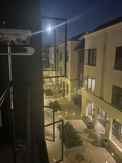
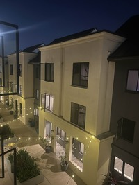
Set 2: Lobby
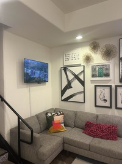
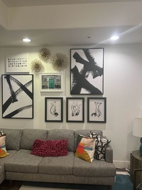
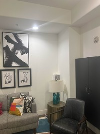
A.2: Recover Homographies
To estimate the homography matrix H, we form a system of linear equations from corresponding points between two images. Each pair of correspondences (xₙ, yₙ) → (uₙ, vₙ) contributes two equations to the system:
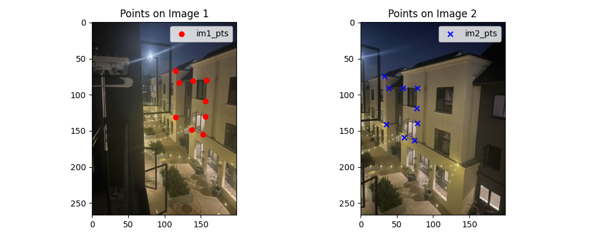
Homography Equations
Each correspondence pair provides two linear constraints. With at least 4 point pairs, we can solve for the 8 degrees of freedom in the homography matrix (the 9th value is fixed to 1 for scale normalization).
Homography Equations
Each correspondence pair provides two linear constraints. With at least 4 point pairs, we can solve for the 8 degrees of freedom in the homography matrix.
$$A = \begin{bmatrix} x_1 & y_1 & 1 & 0 & 0 & 0 & -x_1u_1 & -y_1u_1 \\ 0 & 0 & 0 & x_1 & y_1 & 1 & -x_1v_1 & -y_1v_1 \\ x_2 & y_2 & 1 & 0 & 0 & 0 & -x_2u_2 & -y_2u_2 \\ 0 & 0 & 0 & x_2 & y_2 & 1 & -x_2v_2 & -y_2v_2 \\ x_3 & y_3 & 1 & 0 & 0 & 0 & -x_3u_3 & -y_3u_3 \\ 0 & 0 & 0 & x_3 & y_3 & 1 & -x_3v_3 & -y_3v_3 \\ x_4 & y_4 & 1 & 0 & 0 & 0 & -x_4u_4 & -y_4u_4 \\ 0 & 0 & 0 & x_4 & y_4 & 1 & -x_4v_4 & -y_4v_4 \end{bmatrix}$$ $$\mathbf{b} = [u_1, v_1, u_2, v_2, u_3, v_3, u_4, v_4]^T$$ $$\text{Solution: } \mathbf{h} = A^{-1} \cdot \mathbf{b}$$Homography Matrix for Set 1
$$H_1 = \begin{bmatrix} 1.4477393377e+00 & 4.3222751208e-02 & -1.2847212062e+02 \\ 2.7446187023e-01 & 1.2987916008e+00 & -2.6139411932e+01 \\ 2.1100158925e-03 & 1.4442425324e-05 & 1.0000000000e+00 \end{bmatrix}$$A.3: Warp the Images
Interpolation Methods Comparison
Two interpolation strategies were evaluated:
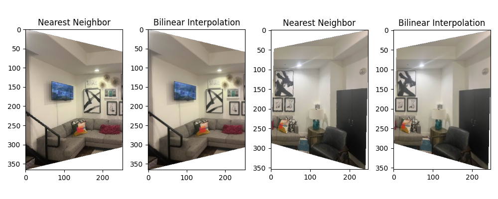
Rectification Examples
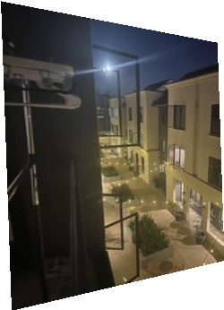
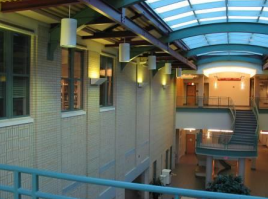
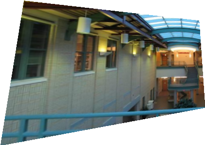
A.4: Blend the Images into a Mosaic
The mosaicing procedure combines multiple warped images through weighted blending:
- Compute bounding box: Warp the corners of all input images to find the output canvas size
- Create canvas: Allocate output image large enough to contain all warped images
- Warp and blend: For each input image, warp using computed homography and blend using weighted averaging
- Normalize weights: Divide final color by accumulated weights to ensure proper blending
Home Mosaic
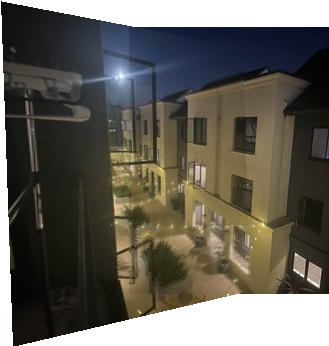
CMU Mosaic
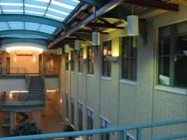
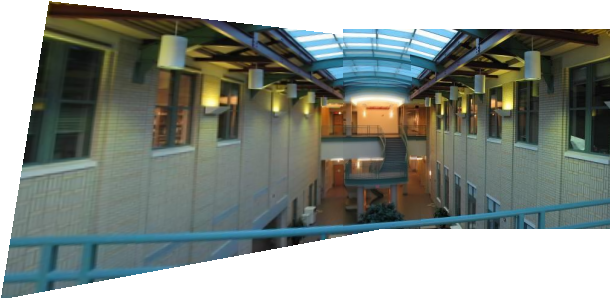
Lobby Mosaic
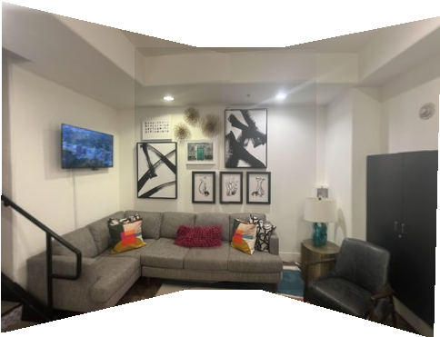
A.5: Bells & Whistles — Cylindrical Mapping
Instead of using planar homography, we warp each image as if they were captured on a cylindrical surface. This reduces distortion for wide field-of-view scenes.
Cylindrical Warp Equations
For each pixel at coordinate (u, v) in the original image, we compute its position on a cylinder:
$$x = f \cdot \tan(\theta) + c_x$$ $$y = f \cdot \frac{h}{\cos(\theta)} + c_y$$where f is the focal length, θ is the viewing angle from center, and (c_x, c_y) are center offsets. Bilinear interpolation maps pixels to the warped coordinates, with manual tuning of focal length and offset for best results.

Part B: Automatic Feature-Based Stitching
B.1: Detecting Corner Features (Harris + ANMS)
We detect corners using the Harris Corner Detector, which identifies regions with high intensity variation in multiple directions. The resulting corners are refined using Adaptive Non-Maximal Suppression (ANMS) to select the most spatially well-distributed points, keeping the top 500 corners.
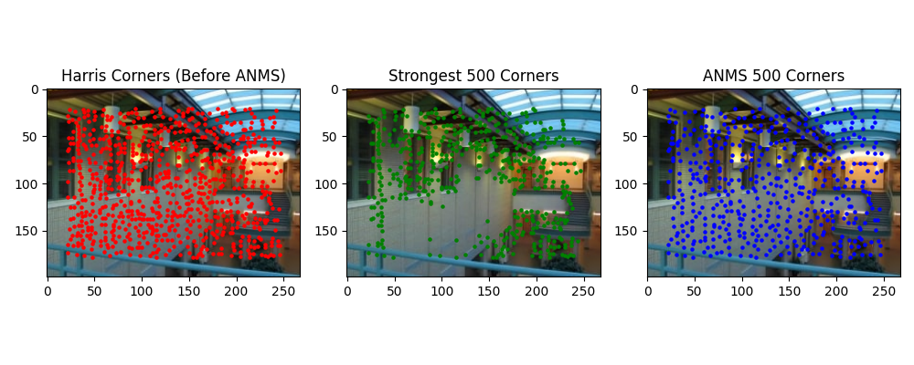
Harris Corner Detector
The Harris detector computes the autocorrelation matrix M of image gradients at each pixel and identifies corners where both eigenvalues are large, indicating high variation in two orthogonal directions.
B.2: Feature Descriptor Extraction
For each detected corner, we extract an 8×8 feature descriptor sampled from a 40×40 neighborhood window. Descriptors are normalized (zero mean, unit variance) to achieve robustness against lighting variations and small affine transformations.
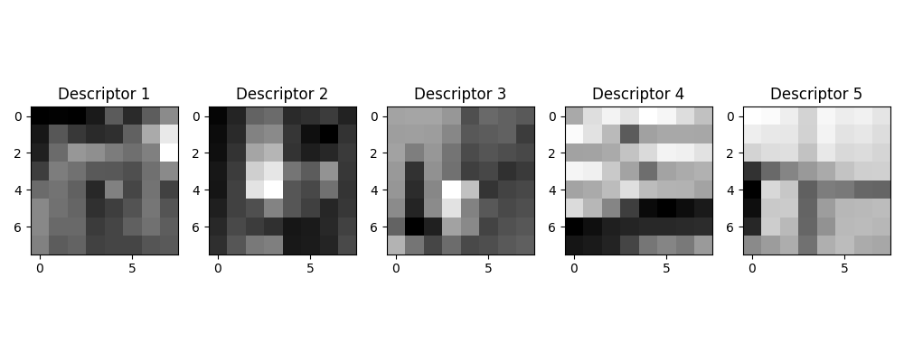
Descriptor Properties
• Sampling: 8×8 patches from 40×40 windows provides scale invariance
• Normalization: Zero-mean, unit-variance ensures lighting invariance
• Compact representation: 64-dimensional feature vector per corner
B.3: Feature Matching
Feature descriptors are matched between image pairs using the squared nearest neighbor distance ratio test. Matches are accepted if the ratio of the first to second nearest neighbor distance is below a threshold.
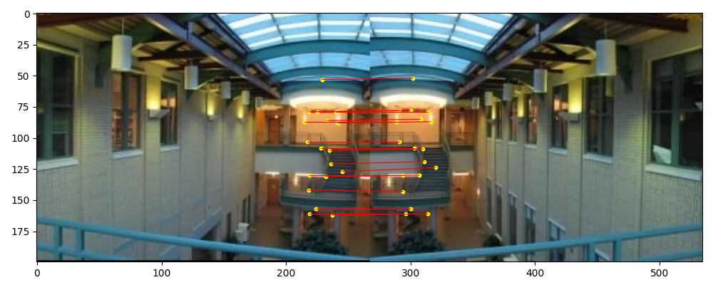
Matching Threshold Tuning
The original Lowe's paper recommends a ratio threshold of 0.1. However, this left only 5-10 valid matches in our test cases—insufficient for robust homography estimation. Through empirical tuning, we found that 0.2 provides a better balance, yielding 20-40 matches while maintaining acceptable precision.
B.4: RANSAC for Robust Homography
We implement 4-point RANSAC to robustly estimate homographies from noisy feature matches. This enables fully automatic mosaicing without manual point selection. Below, we compare manually-selected and automatically-matched results on three scenes.
Home Scene
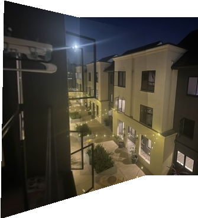
CMU Scene
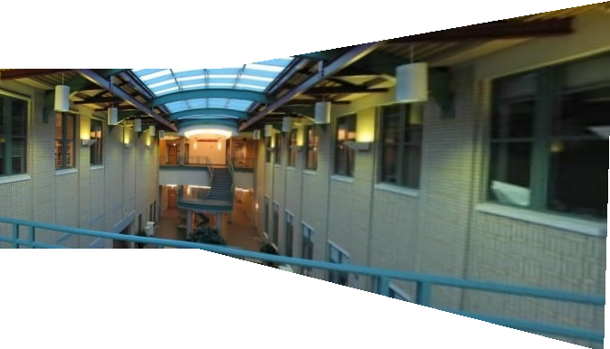
Lobby Scene
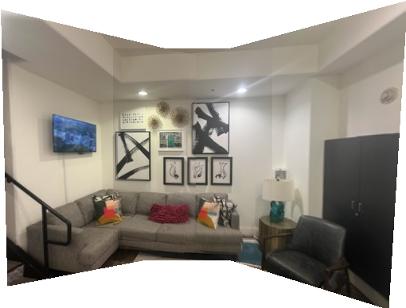
Quality Comparison
The automatic mosaic results are generally superior to manual stitching because they avoid human error in point selection. Notably, the CMU automatic mosaic was computed with right-to-left warping (reverse of manual) to test robustness—the algorithm handled this gracefully, demonstrating its generality.
B.5: Bells & Whistles — Multiscale Processing
We enhanced corner detection and feature matching through multiscale processing. Harris corners are detected at multiple image pyramid levels, and descriptors are extracted from the corresponding scale. This approach improves scale invariance and matching robustness.
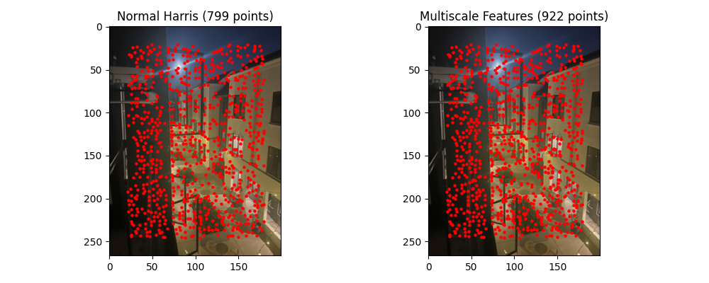
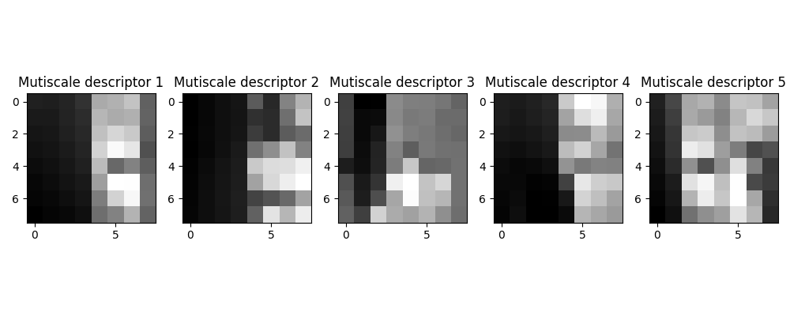
Multiscale Benefits
• Detects corners at all image resolutions for scale-invariant detection
• Improves matching robustness across images with different content scales
• Enables better handling of zoom variations between captures
🎓 Fun Fact: I used CMU pictures for both Part A and Part B because I attended a high school summer session there (and also because I was too lazy to shoot another set of pictures 😄). It was arguably one of the best six weeks of my life—that's when I knew I wanted to study computer science! If I remember correctly, there was a Chinese restaurant right below the CMU scene, and it was my favorite lunch spot back then! 🥡